The Project Gutenberg eBook, Children's Hour with Red Riding Hood and Other Stories, Edited by Watty Piper
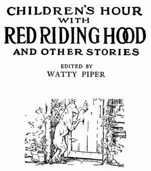
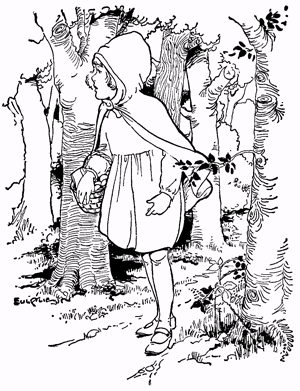
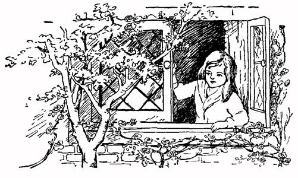
There was once a sweet little maid who lived with her father and mother in a pretty little cottage at the edge of the village. At the further end of the wood was another pretty cottage and in it lived her grandmother.
Everybody loved this little girl, her grandmother perhaps loved her most of all and gave her a great many pretty things. Once she gave her a red cloak with a hood which she always wore, so people called her Little Red Riding Hood.
One morning Little Red Riding Hood's mother said, "Put on your things and go to see your grandmother. She has been ill; take along this basket for her. I have put in it eggs, butter and cake, and other dainties."
It was a bright and sunny morning. Red Riding Hood was so happy that at first she wanted to dance through the wood. All around her grew pretty wild flowers which she loved so well and she stopped to pick a bunch for her grandmother.
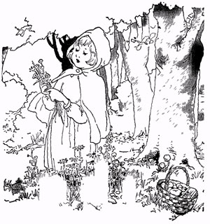
Little Red Riding Hood wandered from her path and was stooping to pick a flower when from behind her a gruff voice said, "Good morning, Little Red Riding Hood." Little Red Riding Hood turned around and saw a great big wolf, but Little Red Riding Hood did not know what a wicked beast the wolf was, so she was not afraid.
"What have you in that basket, Little Red Riding Hood?"
"Eggs and butter and cake, Mr. Wolf."
"Where are you going with them, Little Red Riding Hood?"
"I am going to my grandmother, who is ill, Mr. Wolf."
"Where does your grandmother live, Little Red Riding Hood?"
"Along that path, past the wild rose bushes, then through the gate at the end of the wood, Mr. Wolf."
Then Mr. Wolf again said "Good morning" and set off, and Little Red Riding Hood again went in search of wild flowers.
At last he reached the porch covered with flowers and knocked at the door of the cottage.
"Who is there?" called the grandmother.
"Little Red Riding Hood," said the wicked wolf.
"Press the latch, open the door, and walk in," said the grandmother.
The wolf pressed the latch, and walked in where the grandmother lay in bed. He made one jump at her, but she jumped out of bed into a closet. Then the wolf put on the cap which she had dropped and crept under the bedclothes.
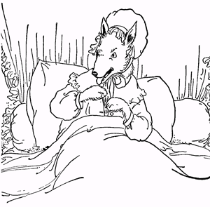
In a short while Little Red Riding Hood knocked at the door, and walked in, saying, "Good morning, Grandmother, I have brought you eggs, butter and cake, and here is a bunch of flowers I gathered in the wood." As she came nearer the bed she said, "What big ears you have, Grandmother."
"All the better to hear you with, my dear."
"What big eyes you have, Grandmother."
"All the better to see you with, my dear."
"But, Grandmother, what a big nose you have."
"All the better to smell with, my dear."
"But, Grandmother, what a big mouth you have."
"All the better to eat you up with, my dear," he said as he sprang at Little Red Riding Hood.
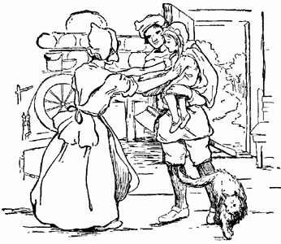
Just at that moment Little Red Riding Hood's father was passing the cottage and heard her scream. He rushed in and with his axe chopped off Mr. Wolf's head.
Everybody was happy that Little Red Riding Hood had escaped the wolf. Then Little Red Riding Hood's father carried her home and they lived happily ever after.
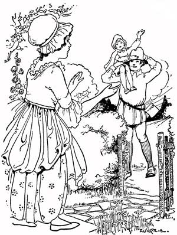
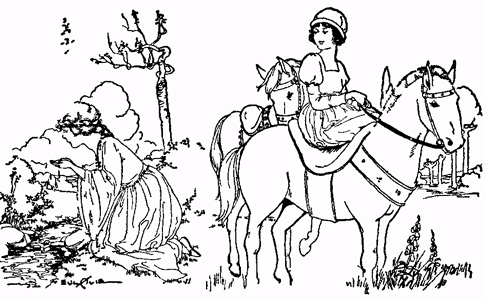
There was once an old Queen who had a very beautiful daughter. The time came when the maiden was to go into a distant country to be married. The old Queen packed up everything suitable to a royal outfit.
She also sent a Waiting-woman with her. When the hour of departure came they bade each other a sorrowful farewell and set out for the bridegroom's country.
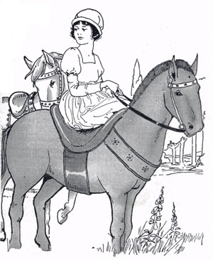
When they had ridden for a time the Princess became very thirsty, and said to the Waiting-woman, "Go down and fetch me some water in my cup from the stream. I must have something to drink."
"If you are thirsty," said the Waiting-woman, "dismount yourself, lie down by the water and drink. I don't choose to be your servant."
Being very thirsty, the Princess dismounted, and knelt by the flowing water.
Now, when she was about to mount her horse again, the Waiting-woman said, "By rights your horse belongs to me; this jade will do for you!"
The poor little Princess was obliged to give way. Then the Waiting-woman, in a harsh voice, ordered her to take off her royal robes, and to put on her own mean garments. Finally she forced her to swear that she would not tell a person at the Court what had taken place. Had she not taken the oath she would have been killed on the spot.
There was great rejoicing when they arrived at the castle. The Prince hurried towards them, and lifted the Waiting-woman from her horse, thinking she was his bride. She was led upstairs, but the real Princess had to stay below.
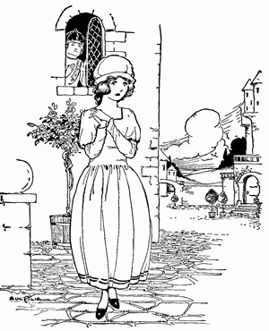
The old King looked out of the window and saw the delicate, pretty little creature standing in the courtyard; so he asked the bride about her companion.
"I picked her up on the way, and brought her with me for company. Give the girl something to do to keep her from idling."
The old King said, "I have a little lad who looks after the geese; she may help him."
The boy was called little Conrad, and the real bride was sent with him to look after the geese. When they reached the meadow, the Princess sat down on the grass and let down her hair, and when Conrad saw it he was so delighted that he wanted to pluck some out; but she said—
"Blow, blow, little breeze,
And Conrad's hat seize.
Let him join in the chase
While away it is whirled,
Till my tresses are curled
And I rest in my place."
Then a strong wind sprang up, which blew away Conrad's hat right over the fields, and he had to run after it. When he came back her hair was all put up again.
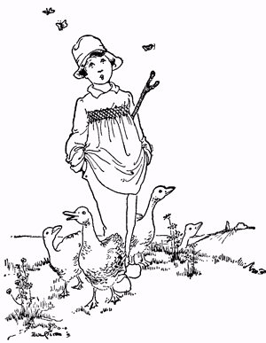
When they got home Conrad went to the King and said, "I won't tend the geese with that maiden again."
"Why not?" asked the King.
Then Conrad went on to tell the King all that had happened in the field. The King ordered Conrad to go next day as usual and he followed into the field and hid behind a bush. He saw it happen just as Conrad had told him. Thereupon he went away unnoticed; and in the evening, when the Goose-girl came home, he asked her why she did all these things.
"That I may not tell you," she answered.
Then he said, "If you won't tell me, then tell the iron stove there;" and he went away.
She crept up to the stove and unburdened her heart to it. The King stood outside by the pipes of the stove and heard all she said. Then he came back, and caused royal robes to be put upon her, and her beauty was a marvel. Then he called his son and told him that he had a false bride, but that the true bride was here.
The Prince was charmed with her beauty and a great banquet was prepared. The bridegroom sat at the head of the table, with the Princess on one side and the Waiting-woman at the other; but she did not recognize the Princess.
When they had eaten, the King put a riddle to the Waiting-woman. "What does a person deserve that deceives his master?" telling the whole story.
The false bride answered, "He must be put into a barrel and dragged along by two white horses till he is dead."
"That is your doom," said the King, "and the judgment shall be carried out."
When the sentence was fulfilled, the young Prince married his true bride, and they lived together in peace and happiness.
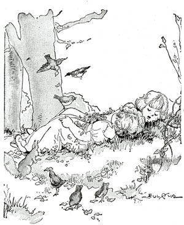
Once upon a time there lived two little children whose parents were ill unto death. They begged their brother to care for the two little ones as he would his own.
The uncle promised he would be a father to them, but he soon began to scheme to possess the money the parents had left in his care for the children. He sent for two robbers and bargained with them to take the two babes into the woods and kill them.
After going many miles into the woods one of the robbers said, "Let us not kill the little children, they never harmed us." The other robber would not consent, so they came to blows. This frightened the children so much that they ran away and did not see the robbers again.
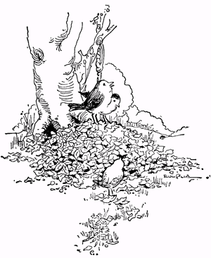
They wandered on and on until they became so tired and hungry that at length they sat down at the foot of a tree and cried as if their hearts would break. The little birds heard them and began to trill sweet lullabies, which presently lulled them to rest.
The birdies knew that the children would die of cold and hunger, so they covered them with leaves of crimson and brown and green. They then told the angels in Heaven the sad story of the lost babes, and one of the white-robed angels flew down to earth and carried both the little ones back to Heaven, so that when they awoke they were no longer tired and hungry, but were again with their dear mother.
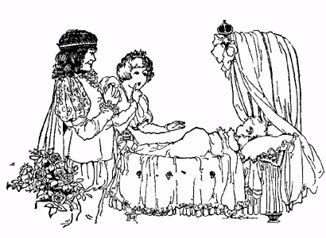
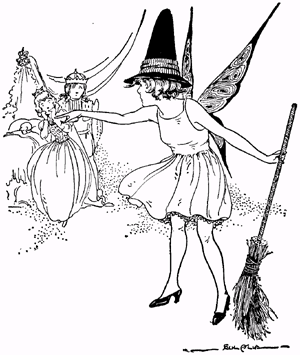
Once upon a time there was a king and queen who for a very long time had no children, and when at length a little daughter was born to them they were so pleased that they gave a christening feast to which they invited a number of fairies. But, unfortunately, they left out one rather cross old fairy, and she was so angry that she said the princess should die when she reached the age of sixteen, by pricking her hand with a spindle.
All the other fairies present, except one, had already given the princess their beautiful gifts, and this last one said she could not prevent part of the wicked wish coming true; but her gift should be that the princess should not really die, but only fall into a deep sleep, which should last for a hundred years, and at the end of that time she should be awakened by a king's son.
It all happened as the fairies had predicted. When the princess was sixteen years old she saw an old woman spinning and took the spindle from her to try this strange new work. Instantly she pricked her hand and fell into a deep sleep, as did everyone else in the palace. There she lay in a bower of roses, year after year, and the hedge around the palace garden grew so tall and thick that at last you could not have told that there was a castle at all.
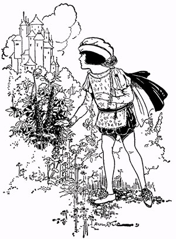
At the end of the hundred years a king's son heard of the castle and the enchanted princess who lay asleep there and determined to rescue her. So he cut his way through the thick prickly hedge and at length he came to the princess. When he saw how lovely and how sweet she looked he fell in love with her and, stooping, kissed her lips.
At once she awoke and with her the king and queen and all the courtiers, who had fallen asleep at the same time.
As the princess was as much taken with the prince's appearance as he was with hers, they decided to be married. And so the wedding was celebrated the same day with great pomp and ceremony.
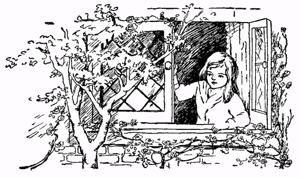
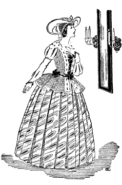
Once upon a time there was a little princess called Snowdrop, who had a cruel step-mother who was jealous of her. The Queen had a magic mirror, which could speak to her, and when she looked into it and asked who was the fairest lady in the land the mirror told her she was, for she was very beautiful; but as Snowdrop grew up she became still more lovely than her step-mother and the mirror did not fail to tell the Queen this.
So she ordered one of her huntsmen to take Snowdrop away and kill her; but he was too tender-hearted to do this and left the maiden in the wood and went home again. Snowdrop wandered about until she came to the house of seven little dwarfs, and they were so kind as to take her in and let her live with them. She used to make their seven little beds, and prepare the meals for the seven little men, and they were all quite happy until the Queen found out from her mirror that Snowdrop was alive still, for, as it always told the truth, it still told her Snowdrop was the fairest lady in the land.
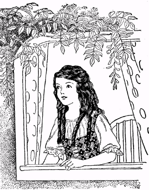
She decided that Snowdrop must die, so she dyed her face and dressed up like an old pedlar, and in this disguise she went to the home of the seven Dwarfs and called out, "Laces for sale."
Snowdrop peeped out of the window and said, "Good-day, mother; what have you to sell?"
"Good laces, fine laces, laces of every color," and she held out one that was made of gay silk.
Snowdrop opened the door and bought the pretty lace.
"Child," said the old woman, "you are a sight, let me lace you properly for once."
Snowdrop placed herself before the old woman, who laced her so quickly and so tightly that she took away Snowdrop's breath and she fell down as though dead.
Not long after the seven dwarfs came home they found that she was laced too tight and cut the lace, whereupon Snowdrop began to breathe and soon came back to life again.
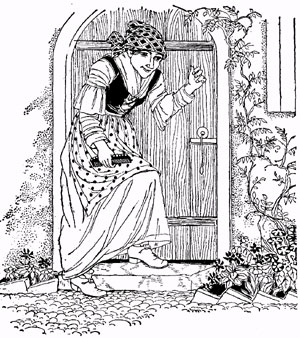
When the Queen got home and found by asking her mirror that Snowdrop was still alive, she planned to make an end of her for good, so she made a poisoned comb and disguised herself to look like a different old woman.
She journeyed to the dwarfs' home and induced Snowdrop to let her comb her hair. The minute she put the poisoned comb in her hair Snowdrop fell down as though dead.
When the seven dwarfs came home they found their poor Snowdrop on the floor, and suspecting the bad Queen began to look for the cause, soon finding the comb. No sooner had they removed it than Snowdrop came to life again.
Upon the Queen's return home she found by asking her mirror that Snowdrop still lived, so she disguised herself a third time and came to the dwarfs' little house and gave Snowdrop a poisoned apple. As soon as the little princess took a bite it stuck in her throat and choked her.
Oh! how grieved were the good little dwarfs. They made a fine glass coffin, and put Snowdrop into it and were carrying her away to bury her when they met a prince, who fell in love with the little dead maiden, and begged the dwarfs to give her to him.
The dwarfs were so sorry for him they consented, and the prince's servants were about to carry the coffin away when they stumbled and fell over the root of a tree. Snowdrop received such a violent jerk that the poisonous apple was jerked right out of her throat and she sat up alive and well again.
Of course she married the prince, and she, her husband and the good little dwarfs lived happily ever after, but the cruel step-mother came to a bad end, and no one was even sorry for her.